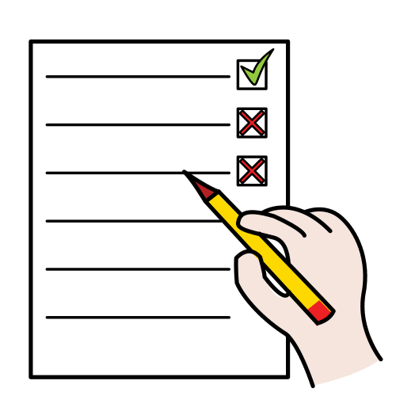

Comprueba si tus textos cumplen las pautas explicadas en esta guía.
Instrucciones:
- Lee las preguntas que componen la lista de verificación.
- Completa la lista pulsando la opción Aplicar.
- Marca para cada pregunta la respuesta Sí o No.
- Una vez respondida obtendrás una puntuación para saber si tu REA en Lectura Fácil cumple las pautas explicadas en esta guía.